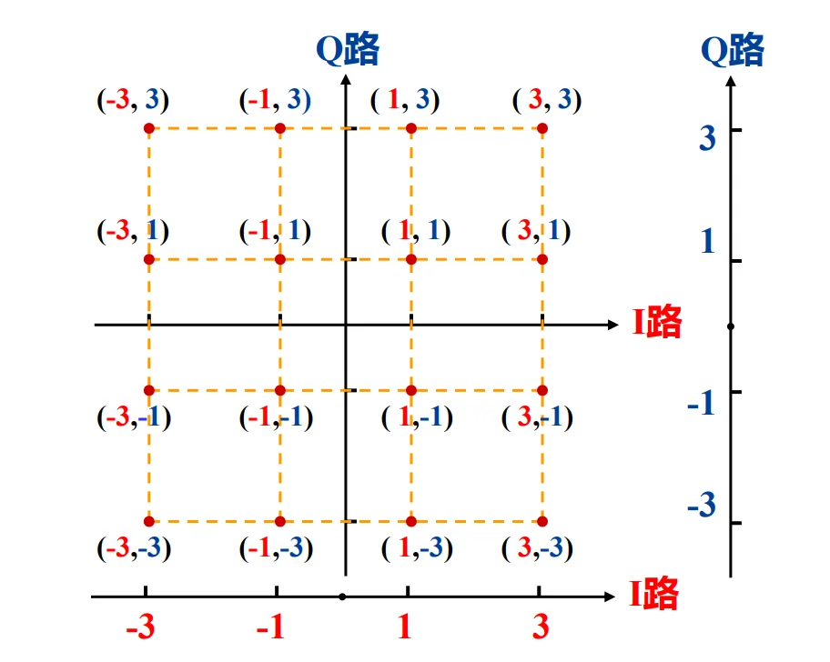
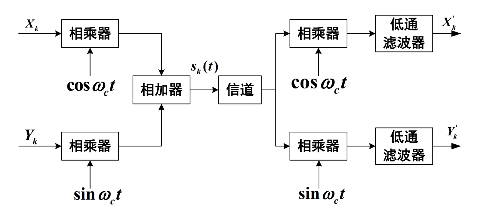
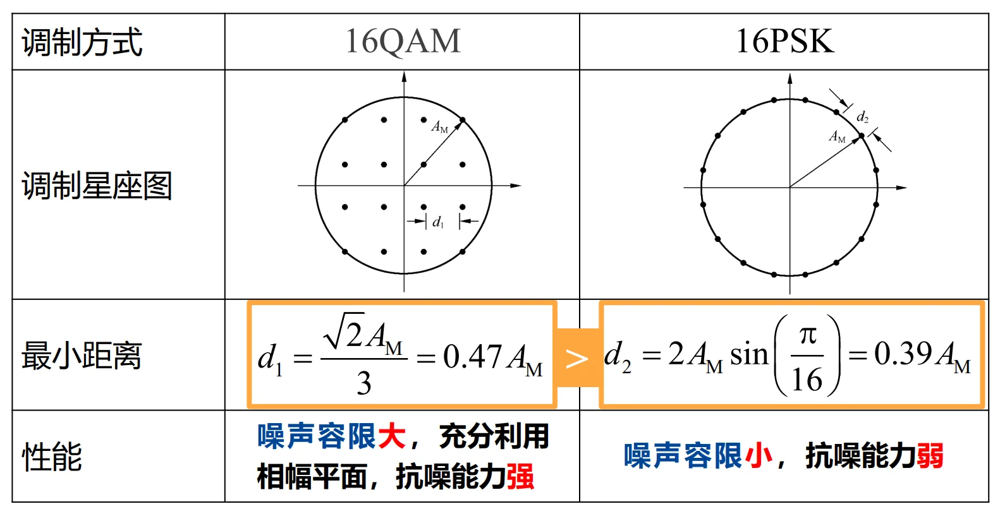
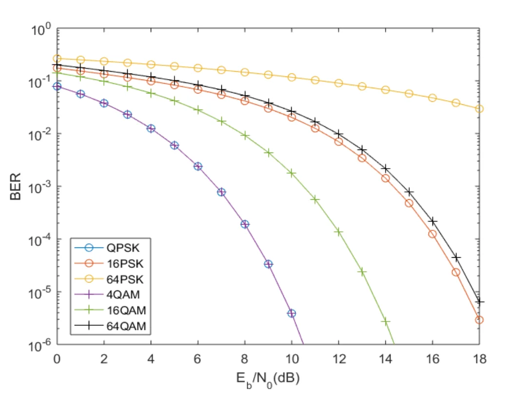

Ch11. MQAM
I. MQAM 技术的引入与背景（核心痛点）¶
1. MPSK 的致命瓶颈
在上一章我们学到，为了提高传输速率（频带利用率），我们要增加调制阶数 \(M\)。但是，MPSK 所有的信号点都只能排布在一个固定半径的圆周上。
- 痛点： 当 \(M\) 越来越大（比如 16、64），在这个有限的“呼啦圈”上挤入的信号点就越来越多，导致相邻两个点之间的最小距离 \(d_{min}\) 急剧减小。
- 后果： 稍微有一点点噪声（判决区域变窄），接收端就会把 A 点错判成 B 点，误码率飙升。
2. 破局思路：从“一维圆周”走向“二维平面”
既然圆周上挤不下了，为什么不把圆内部的空间也利用起来呢？
如果我们在改变载波相位的同时，也改变载波的振幅，让信号点均匀地铺满整个二维平面（变成网格状），点与点之间的距离不就被拉开了吗？
这就是 MQAM (多进制正交幅度调制, Quadrature Amplitude Modulation) 的核心思想：振幅和相位联合键控。
II. MQAM 信号的产生与系统模型¶
2.1 星座图演进¶
MQAM 的信号点呈现出完美的“正方形网格”分布。随着 \(M = 4, 16, 64, 256\) 增加，网格越来越密。传输速率随之提升，但同样会面临相邻距离减小的问题（前提是总发射功率受限）。
2.2 16QAM 信号的产生方法¶
课件介绍了两种方法，我们重点掌握第一种最通用、最本质的方法。
方法一：正交调幅法（极其重要！）
详细解释：MQAM 的正交调幅法
不要被 QAM 这个名字吓到，它本质上就是两路独立的多电平 ASK 信号（MASK）的叠加。

拆解 16QAM： 16 = 4 × 4。这意味着我们可以用一路 4ASK 信号去控制 \(\cos(\omega_0 t)\)（I路），用另一路 4ASK 信号去控制 \(\sin(\omega_0 t)\)（Q路）。
坐标系理解：
- 横轴（I路）的取值有 4 种电平：\(-3, -1, +1, +3\)
- 纵轴（Q路）的取值也有 4 种电平：\(-3, -1, +1, +3\)
- 它们两两组合，刚好形成 \(4 \times 4 = 16\) 个坐标点，比如 \((3, 3), (-1, 3)\) 等。
方法二：复合相移法
- 将 16QAM 看作是两路独立的、振幅不同的 QPSK 信号的物理叠加。(工程上相对少用，理解即可)。
2.3 QAM 调制解调系统数学表达式¶

任意 MQAM 信号的时域表达式都可以写为极其清爽的正交形式：
- \(X_k\): 同相支路 (I路) 的基带信号电平（如 \(\pm 1, \pm 3\)）
- \(Y_k\): 正交支路 (Q路) 的基带信号电平（如 \(\pm 1, \pm 3\)）
- \(\omega_0\): 载波角频率
由于 \(\cos\) 和 \(\sin\) 是完全正交的，在接收端，只要分别乘以 \(\cos\) 和 \(\sin\) 并通过低通滤波器，就可以无干扰地把 \(X_k\) 和 \(Y_k\) 解调出来。
III. 核心对决：16QAM 与 16PSK 的抗噪性能博弈¶
这是本节课最难也是最核心的知识点：为什么有了 16PSK，还要发明 16QAM？
抗噪声能力的核心指标是：相邻信号点之间的最小欧氏距离 \(d_{min}\)。距离越大，越不容易被噪声推到别人的地盘（容错率高）。
3.1 在“最大振幅（峰值功率）相同”条件下的 PK¶
假设系统的放大器有峰值限制，允许输出的最大振幅均为 \(A_M\)。

1. 16PSK 的最小距离推导：
16PSK 所有点都在半径为 \(A_M\) 的圆上。相邻两点的夹角是 \(\frac{2\pi}{16} = \frac{\pi}{8}\)。
由简单的等腰三角形关系可得底边（点间距离）：
2. 16QAM 的最小距离推导（课件跳过了这一步，这里为你补全）：
看 16QAM 的网格，离原点最远的点（即四个角落的点，坐标为 \((\pm 3, \pm 3)\)）它的振幅最大。
假设相邻两点之间的距离为 \(d_1\)，则横轴坐标可以表示为 \(\pm \frac{d_1}{2}, \pm \frac{3d_1}{2}\)。
- 角落点的横坐标是 \(\frac{3d_1}{2}\)，纵坐标是 \(\frac{3d_1}{2}\)。
- 角落点到原点的距离（即最大振幅 \(A_M\)）的平方为：\(A_M^2 = \left(\frac{3d_1}{2}\right)^2 + \left(\frac{3d_1}{2}\right)^2 = \frac{18d_1^2}{4}\)
- 解得：\(d_1 = \sqrt{\frac{4A_M^2}{18}} = \frac{2A_M}{3\sqrt{2}} = \frac{\sqrt{2}A_M}{3} \approx 0.47 A_M\)
结论： \(0.47 A_M > 0.39 A_M\)。在同等峰值功率下，16QAM 的相邻点距离更大，噪声容限更大，抗噪能力更强！
3.2 在“平均功率相同”条件下的 PK¶
- 16PSK 所有的点都在圆周上，所以平均功率 = 最大功率。
- 16QAM 有内圈的点（如 \((\pm 1, \pm 1)\)），能量很小，只有外圈的点能量大。所以在同等最大功率下，16QAM 的平均功率其实小得多（计算得出最大功率是平均功率的 1.8倍，即 2.55dB）。
- 终极结论： 如果我们强制让 16QAM 和 16PSK 的平均发送功率相等（这才符合真实的发射功耗计算），16QAM 的信号点可以进一步拉得更开。此时，16QAM 的相邻距离甚至超过 16PSK 约 4.12 dB！这是绝对的碾压优势。
IV. MQAM 的误码率理论分析¶
由于 MQAM 是两路正交的 MASK 的叠加，其误码率完全可以利用已知的多电平基带系统（MASK）来推导。
📍 [此处插入图片：课件第9页“MQAM信号的误符号率”公式]
- 定义电平数 \(L\)： 对于 \(M\) 进制 QAM，横纵两个坐标轴各自拥有的电平数量为 \(L = \sqrt{M}\)。（例如 16QAM，\(M=16\)，则单路电平数 \(L=4\)）。
- 误符号率 (\(P_{E, MQAM}\))：
$\(P_{E, MQAM} = \frac{2(L-1)}{L} Q\left(\sqrt{\frac{3}{L^2 - 1} \frac{E_s}{N_0}}\right)\)$
(注：公式中的推导替换了信号功率与噪声比 \(S/N\)，只需记住最终与 \(E_b/n_0\) 相关的形态即可。) - 误比特率 (\(P_B\))：
如果在坐标映射时采用了格雷码（相邻网格点只有 1 bit 不同），那么发生一次符号误判，通常只会错 1 个 bit。
$\(P_B \approx \frac{1}{\log_2 L} P_{E, MQAM} = \frac{2(1 - L^{-1})}{\log_2 L} Q\left(\sqrt{\frac{6 \log_2 L}{L^2 - 1} \frac{E_b}{N_0}}\right)\)$
性能直观对比（看图说话）：

从曲线上可以得出两个铁律：
1. 无论是 PSK 还是 QAM，\(M\) 越大，误比特率曲线越靠右（性能越差），因为点与点越挤。
2. 在相同的 \(M\) 下（比如对比 16QAM 的绿色实线 和 16PSK 的橙色带圈线），MQAM 的曲线永远在 MPSK 的左侧，这意味着要想达到相同的误码率，MQAM 所需的信噪比 (\(E_b/N_0\)) 更低！
V. 频带利用率与香农极限¶
5.1 频带利用率计算¶
引入 MQAM 的最初目的就是为了省带宽。
- 理想奈奎斯特带宽下： 频带利用率 = \(\log_2 M \quad \text{(b/s/Hz)}\)
- 例如 16QAM，1 Hz 频带每秒能传 4 个 bit。
- 实际系统中（采用升余弦滚降滤波器）： 实际滤波器无法做到绝对陡直，需要一定的滚降系数 \(\alpha\)（\(0 < \alpha \le 1\)）来防止码间串扰。
- 频带利用率 = \(\frac{1}{1 + \alpha} \log_2 M \quad \text{(b/s/Hz)}\)